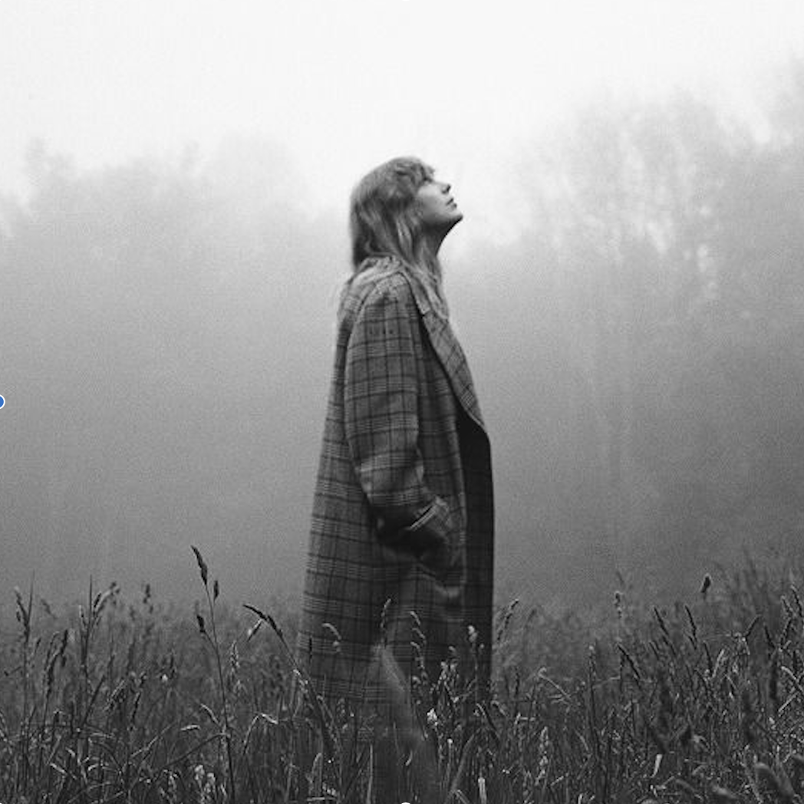
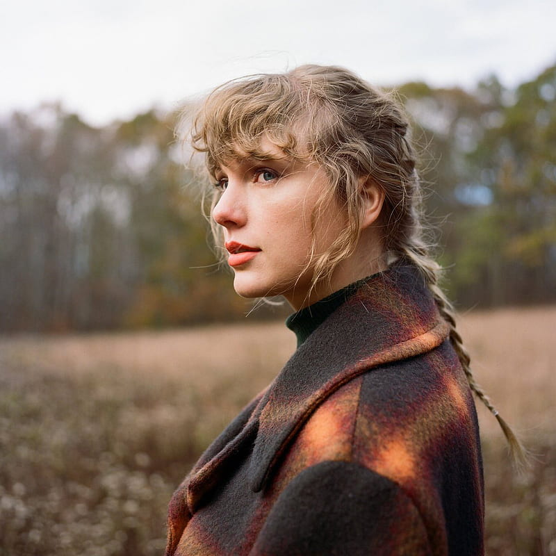
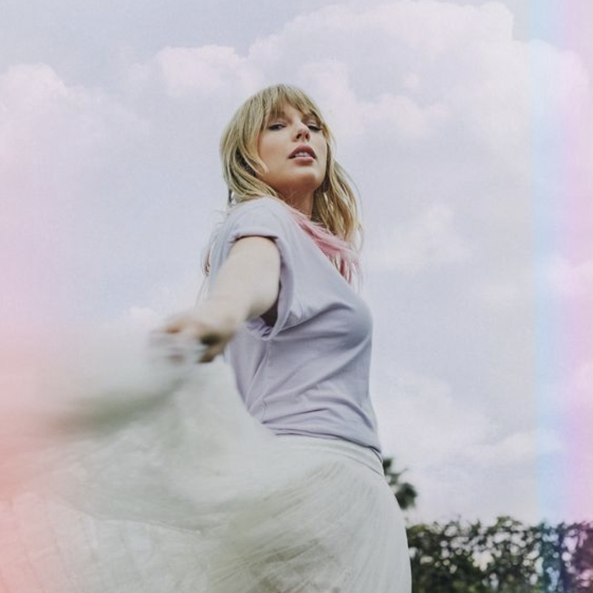
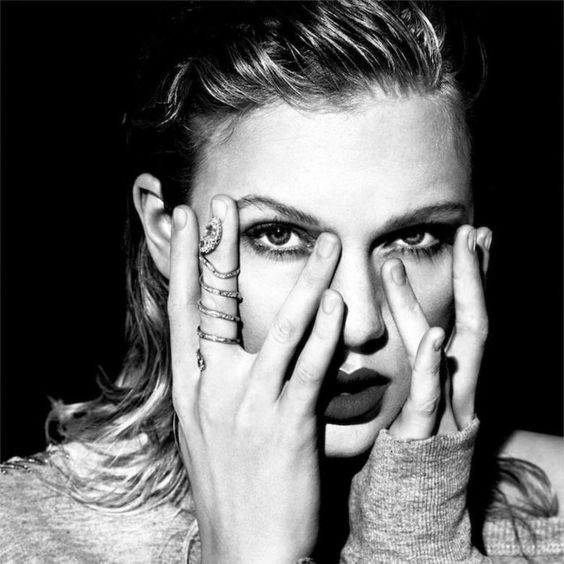
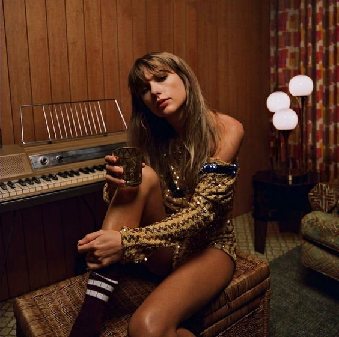

1) folklore

It started with imagery. Visuals that popped into my mind and piqued my curiosity.
Stars drawn around scars. A cardigan that still bears the scent of loss twenty years later.
Battleships sinking into the ocean, down, down, down. The tree swing in the woods of my childhood.
Hushed tones of “let’s run away” and never doing it. The sun drenched month of August, sipped away
like a bottle of wine. A mirrored disco ball hovering above a dance floor. A whiskey bottle beckoning. Hands held through plastic.
A single thread that, for better or for worse, ties you to your fate.
Pretty soon these images in my head grew faces or names and became characters. I found myself not only
writing my own stories, but also writing about or from the perspective of people I’ve never met, people
I’ve known, or those I wish I hadn’t. An exiled man walking the bluffs of a land that isn’t his own,
wondering how it all went so terribly, terribly wrong. An embittered tormentor showing up at the funeral
of his fallen object of obsession. A seventeen-year-old standing on a porch, learning to apologize.
Lovestruck kids wandering up and down the evergreen High Line. My grandfather, Dean, landing at Guadalcanal
in 1942. A misfit widow getting gleeful revenge on the town that cast her out.
A tale that becomes folklore is one that is passed down and whispered around. Sometimes even sung about.
The lines between fantasy and reality blur and the boundaries between truth and fiction become almost
indiscernible. Speculation, over time, becomes fact. Myths, ghost stories, and fables.
Fairytales and parables. Gossip and legend. Someone’s secrets written in the sky for all to behold.
In isolation my imagination has run wild and this album is the result, a collection of songs and stories
that flowed like a stream of consciousness. Picking up a pen was my way of escaping into fantasy, history,
and memory. I’ve told these stories to the best of my ability with all the love, wonder, and whimsy they deserve.
Now it’s up to you to pass them down.
Track Listing
- the 1
- cardigan
- the last great american dynasty
- exile
- my tears ricochet
- mirrorball
- seven
- august
- this is me trying
- illicit affairs
- invisible string
- mad woman
- epiphany
- betty
- peace
- hoax
- the lakes - bonus track
1) evermore
(tied with folklore)

To put it plainly, we just couldn't stop writing songs. To try and put it more poetically,
it feels like we were standing on the edge of the folklorian woods and had a choice: to turn and go
back or to travel further into the forest of this music. We chose to wander deeper in and my collaborators
and I are proud to announce that my 9th studio album and folklore's sister record is here. It's called evermore.
I've never done this before. In the past I've always treated albums as one-off eras and moved onto planning the
next one as soon as an album was released. There was something different with folklore. In making it, I felt less like
I was departing and more like I was returning. I loved the escapism I found in these imaginary/not imaginary tales.
I loved the ways you welcomed the dreamscapes and tragedies and epic tales of love lost and found.
So I just kept writing them. And I loved creating these songs with Aaron Desser, Jack Antonoff, WB, and Justin Vernon.
We've also welcomed some new (and longtime friends) to our musical kitchen table this time around...
Before I knew it there were 17 tales, some of which are mirrored or intersecting with one another.
The one about two young con artists who fall in love while hanging out at fancy resorts trying to score rich romantic beneficiaries.
The one where longtime college sweethearts had very different plans for the same night, one to end it and one who brought a ring.
Dorothea, the girl who left her small town to chase down Hollywood dreams - and what happens when she comes back for the holidays
and rediscovers an old flame. The 'unhappily ever after' anthology of marriages gone bad that includes infidelity,
ambivalent toleration, and even murder. The most righteous motive, to avenge the fallen. The realization that
maybe the only path to healing is to wish happiness on the one who took it away from you. One starring my grandmother,
Marjorie, who still visits me sometimes...if only in my dreams.
I wanted to surprise you with this the week of my 31st birthday. You've all been so caring, supportive
and thoughtful on my birthdays and so this time I wanted to give you something! I also know this holiday season will
be a lonely one for most of us and if there are any of you out there who turn to music to cope with missing
loved ones the way I do, this is for you.
I have no idea what will come next. I have no idea about a lot of things these days and so I've clung to
the one thing that keeps me connected to you all. That thing always has and always will be music.
And may it continue, evermore.
Track Listing
- willow
- champagne problems
- gold rush
- 'tis the damn season
- tolerate it
- no body, no crime (feat. HAIM)
- happiness
- dorothea
- coney island (feat. The National)
- ivy
- cowboy like me
- long story short
- marjorie
- closure
- evermore (feat. Bon Iver)
- right where you left me - bonus track
- it's time to go - bonus track
2) Lover

Lover is the seventh studio album by American singer-songwriter Taylor Swift.
It was released on August 23, 2019, through Republic Records, and is her first album release after her departure
from Big Machine Records, which resulted in a highly publicized dispute. Swift recorded Lover with producers Jack Antonoff,
Joel Little, Louis Bell, and Frank Dukes from November 2018 to February 2019 following her 2018 Reputation Stadium Tour, where she
felt motivated by the fans, helping her recover her mental health after the controversies leading up to Reputation (2017).
Swift conceived Lover as a "love letter to love", taking inspiration from her recalibrated personal life and newfound artistic freedom.
Track Listing
- I Forgot That You Existed
- Cruel Summer
- Lover
- The Man
- The Archer
- I Think He Knows
- Miss Americana & the Heartbreak Prince
- Paper Rings
- Cornelia Street
- Death by a Thousand Cuts
- London Boy
- Soon You'll Get Better (feat. The Dixie Chicks)
- False God
- You Need to Calm Down
- Afterglow
- Me!
- It's Nice to Have a Friend
- Daylight
3) reputation

Reputation is the sixth studio album by Taylor Swift and is her last release under the label.
Swift became a subject of rampant tabloid scrutiny following the release of her fifth studio album 1989 (2014), with the media
outlets highly publicizing her personal life and her celebrity disputes. She hence secluded herself from the press and social media,
where she had maintained an active presence, and created Reputation as an effort to revamp her state of mind.
Often confused with a revenge album but more accurately describes Swift learning to let go of the pressures of fame and her reputation.
Instead, she learns to focus those that truly care about her and her well-being.
To learn about the genius of reputation, this reddit post describes it very well.
Track Listing
- ...Ready For It?
- End Game
- I Did Something Bad
- Don't Blame Me
- Delicate
- Look What You Made Me Do
- So It Goes...
- Gorgeous
- Getaway Car
- King of My Heart
- Dancing With Our Hands Tied
- Dress
- This Is Why We Can't Have Nice Things
- Call It What You Want
- New Year's Day
Notable Albums
Midnights

Red